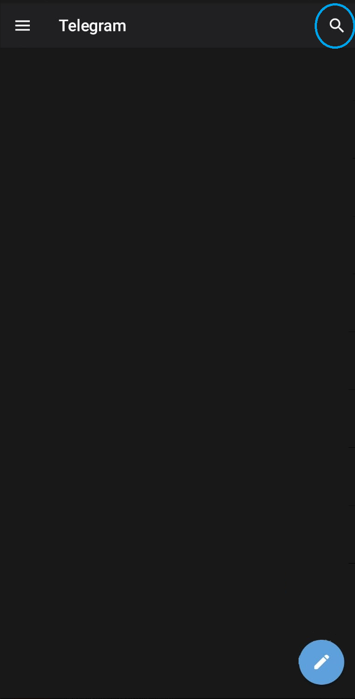
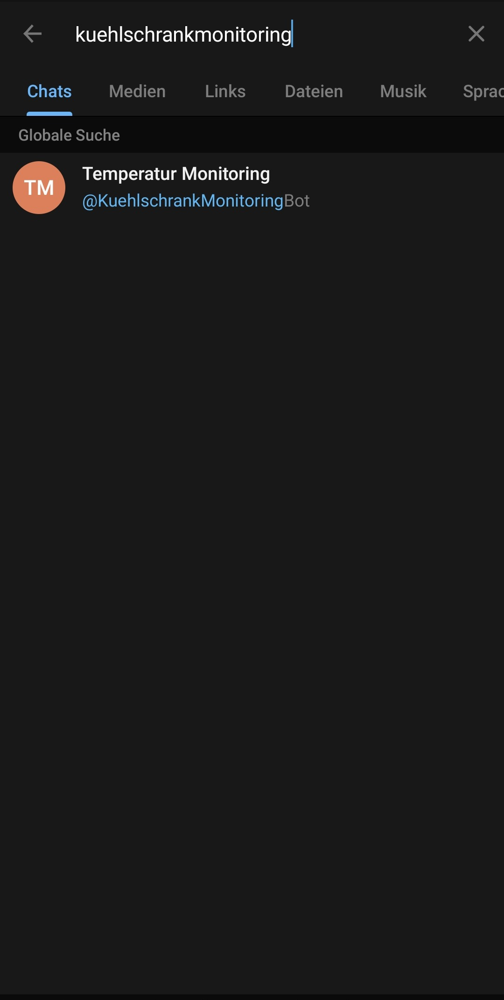
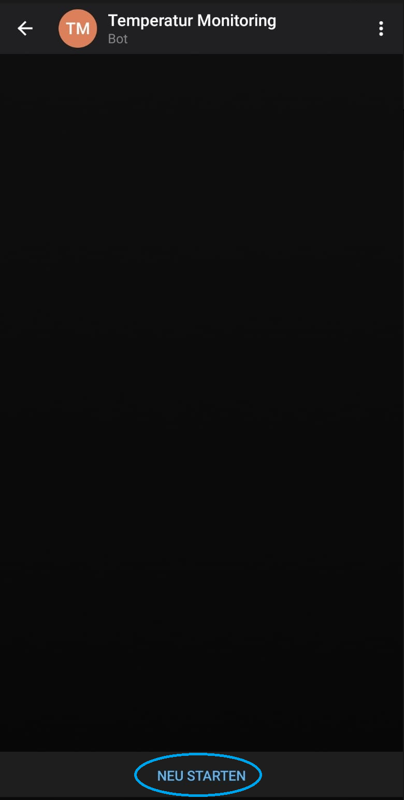
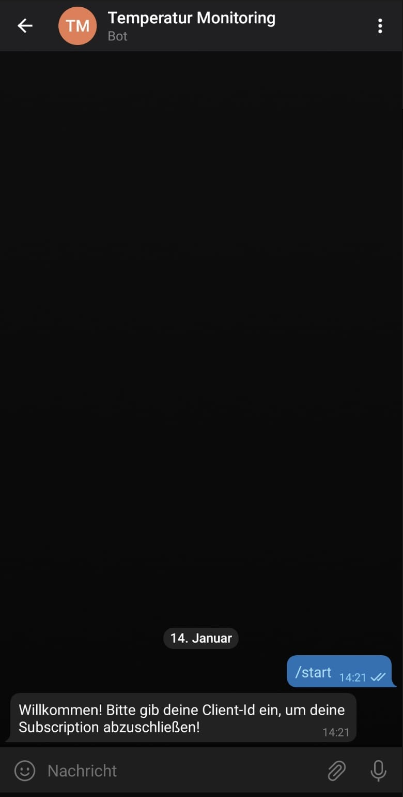
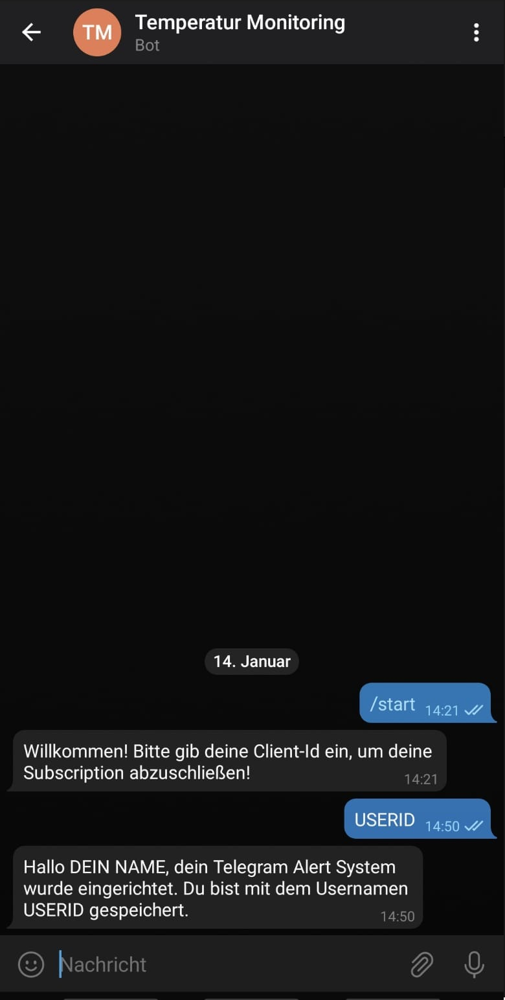

Telegram Monitoring Bot abonnieren
Um Benachrichtigungen bei Fehlerverhalten der Kühlgeräte zu erhalten, muss der Monitoring Bot auf Telegram
abonniert
werden. Folgende Schritte sind dafür nötig:
-
Der Monitoring Bot ist öffentlich
zugänglich und abonnierbar.
-
Auf Telegram kann die Suchfunktion verwendet werden, um den Bot zu finden.
Tippe im Suchfeld "Kuehlschrankmonitoring" ein. Es sollte ein Bot namens "Temperatur Monitoring" vorgeschlagen
werden.
-
Drücke auf den Bot und anschließend auf Starten.
-
Um das Abonnieren abzuschließen, gib deine Client-Id ein.
Der Vorgang ist abgeschlossen, wenn dein Name und Client-Id in der Antwort vom Bot zu finden sind.




